Slide 1


Review of Summertime Winds at George Bush International Airport (KIAH)
Eric Zappe
National Weather Service
Houston Center Weather Service Unit
National Weather Service
Houston Center Weather Service Unit
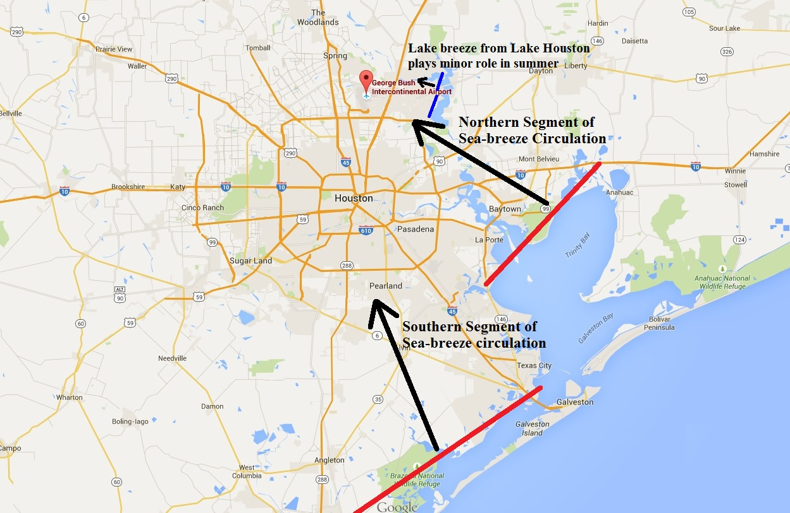
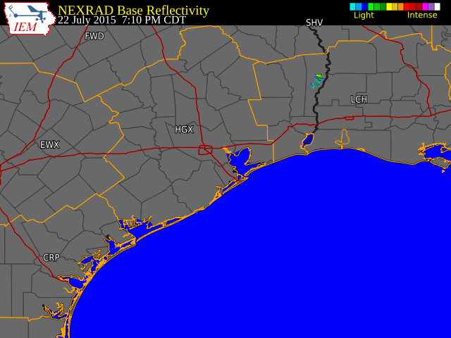
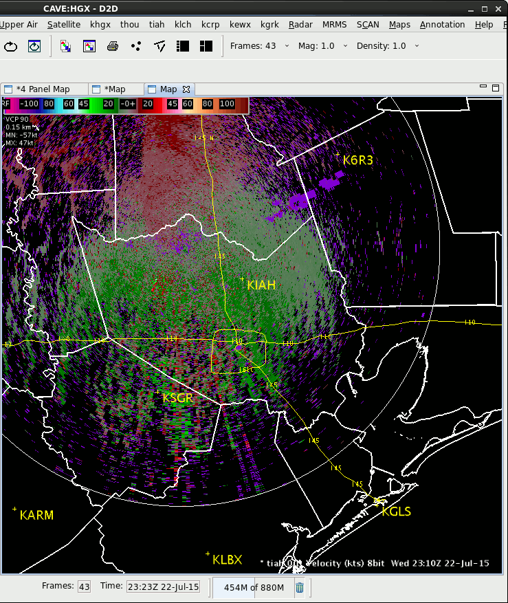
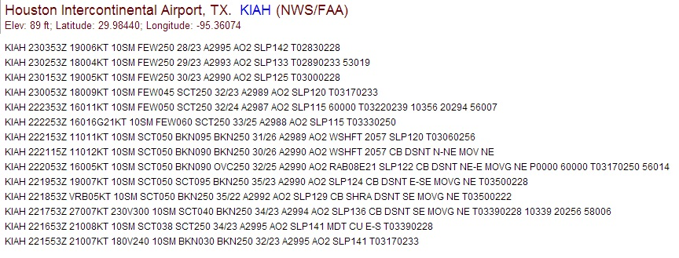
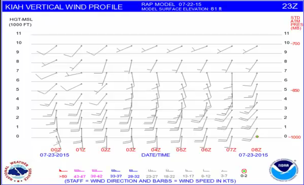
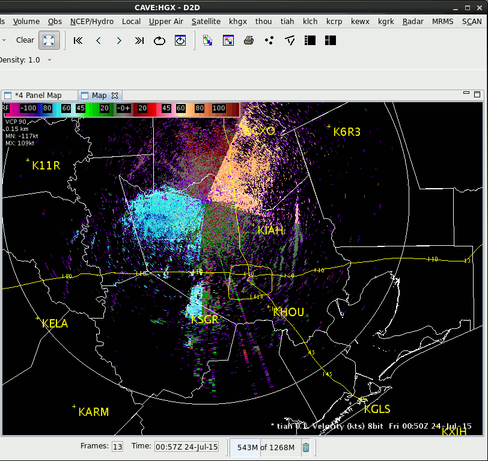
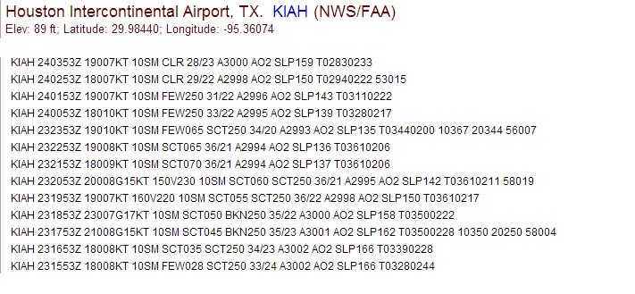
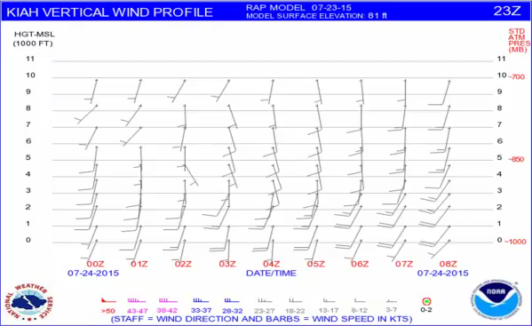
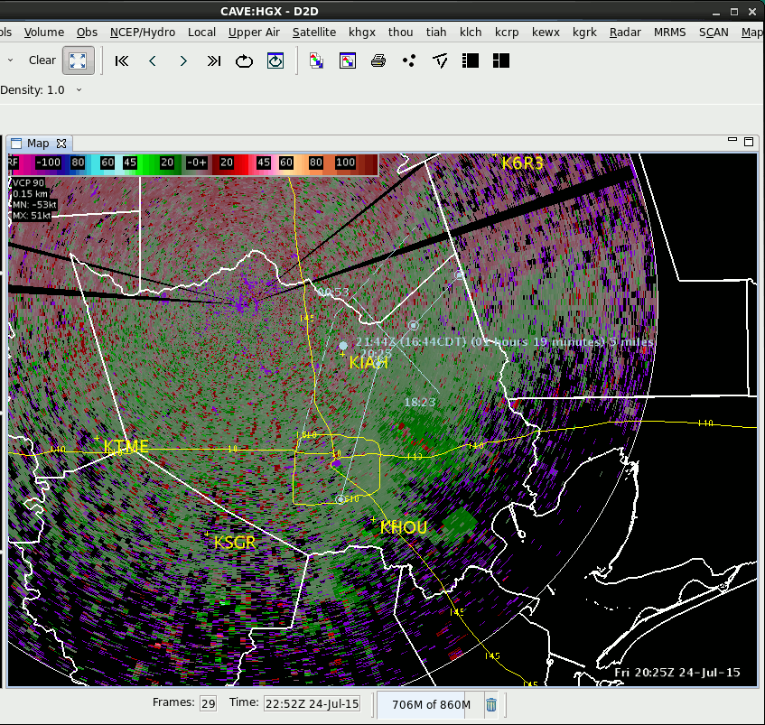
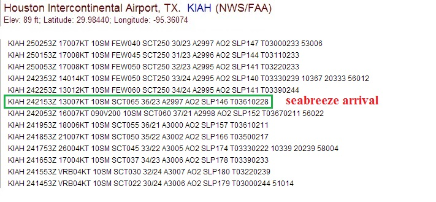
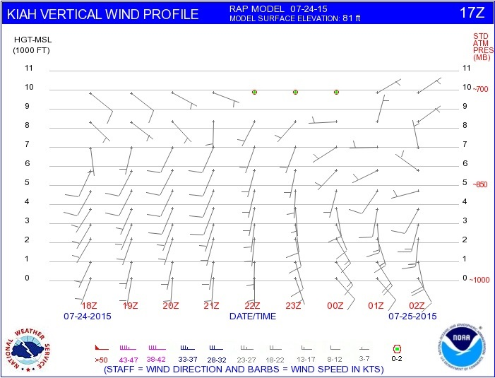
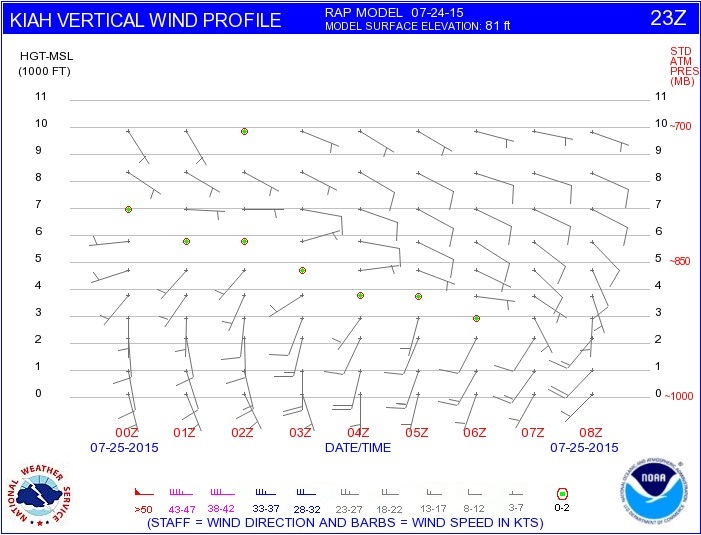